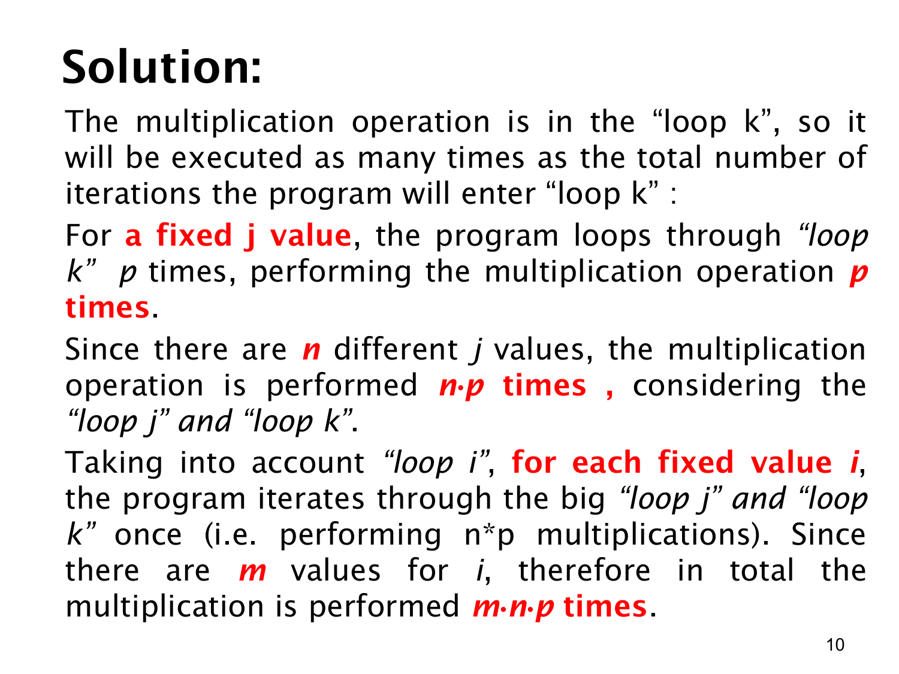

课件第 10 页讲解原文
查看这一页课件

从最内层向外计算循环总次数
这一页把 mnp 的来源分层解释。最方便的方法是先固定外层变量，只观察最内层，再逐层扩大计算范围。
先固定 i 和 j。 此时 k 从 1 跑到 p，每次做一次乘法，所以这一轮最内层循环做 p 次乘法。课件说“固定 j”时，外面的 i 也处于某个固定值。
再固定 i，让 j 跑完。 j 有 n 个不同值。每取一个新的 j，都要重新执行一次完整的 k 循环，因此这一层总计：
n 项p+p+⋯+p=np.
最后让 i 跑完。 i 有 m 个值，每个值都要完成刚才那组 np 次乘法，所以总计：
m 项np+np+⋯+np=mnp.
例如取 m=2,n=3,p=4：每一对 (i,j) 需要 4 次乘法；每个 i 对应 3 个 j，需要 12 次；两个 i 共需要 24 次。
要区分“进入一次最内层循环”和“最内层循环体执行一次”。在整个算法中，完整的 k 循环启动了 mn 次，每次循环体执行 p 次，所以红色乘法语句执行 mnp 次。
这种直接相乘依赖于各层循环范围固定。如果某层循环的上界取决于外层变量，例如 j=1,…,i，每一轮的次数就不相同，应先写出求和，不能直接把最大上界相乘。